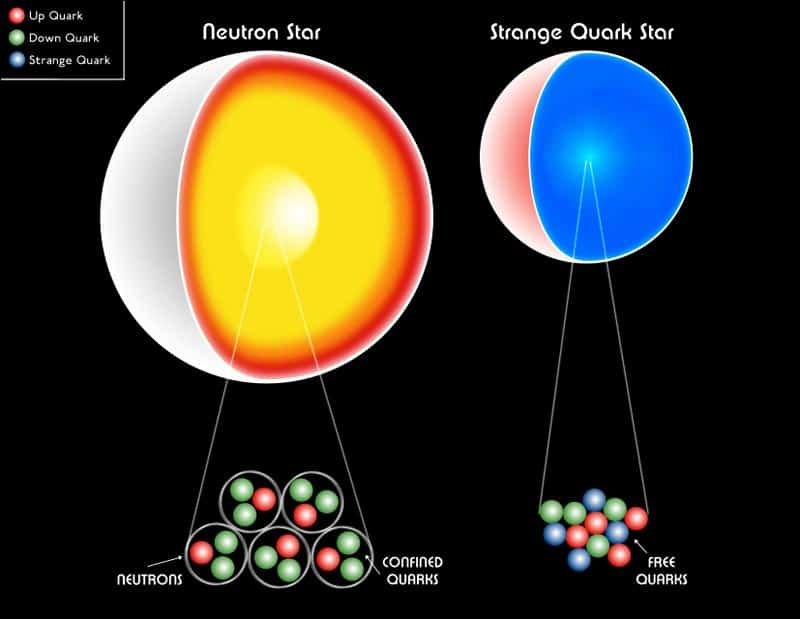

Quark stars - hypothetical objects made of quarks
What are quark stars?
Quark stars are hypothetical astronomical objects that are believed to form as a result of the violent collapse of the core of a neutron star after it reaches the end of its life. Inside a quark star, normal matter undergoes a transformation into what is known as quark matter, consisting of free quarks. These stars are incredibly dense and compact, with masses comparable to that of the Sun despite their small sizes. It is believed that at the center of quark stars, there may exist a black hole, making them some of the most extreme objects in the universe. While they have not been directly observed yet, theoretical and observational research suggests the possibility of the existence of quark stars.
How do they form?
The formation of quark stars is associated with the violent collapse of the core of a neutron star. When a neutron star reaches a critical mass, gravity causes further compression of the core. As a result of this compression, normal matter composed of protons and neutrons undergoes decay, and the quarks, which are the fundamental constituents of particles, become free. Quark matter can be described as a dense concentration of free quarks. This process is still being studied and requires further theoretical and observational research to better understand the formation of quark stars. Currently, there are various models and hypotheses regarding this process, but it remains partially mysterious.
